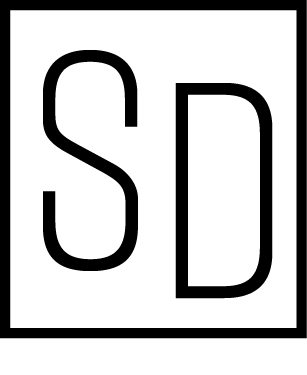
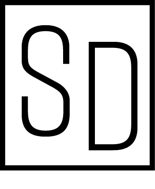

Rift Light - 20 pt
Het logo voor de concert tour is simpel maar heeft toch een moderne feel. Dit is voor ons belangrijk, omdat we cateren voor een volwassen doelgroep die nog jong zijn. Ze hebben niet veel tijd en zijn hun carrieres nog aan het opbouwen. Zij zijn mee met de laatste mode en hebben graag een strak en simpel logo die direct weergeeft waar de brand voor staat. Het was naar onze mening dan ook maar logisch dat we dit in ons logo overnamen.
Dit logo wordt naast het web ook gebruikt op onze couponcodes. We stellen voor het web vaste afmetingen in, terwijl we voor geprinte media een lossere
maat hanteren.
Het logo wordt altijd in zwart of wit weergegven. Om andere kleuren toe te passen moet dit met onze expliciete toestemming.
Don'ts:
- Vervorm het logo niet
- Draai het logo niet om
- Het logo mag niet aflopend gebruikt worden
- Bewerkingen van het logo mogen niet gemaakt worden (zonder toestemming)
WEB:
hoogte = 100px
breedte = 30px
PRINT:
Aanpasbaar aan het drukwerk, mits goedkeuring.
Source Sans Pro - Light - 26 pt
Top: 10px
Right: 0px
Bottom: 20px
Left: 25px
TITEL - Source Sans Pro - SemiBold - 24pt
SUBTITEL - Source Sans Pro - Light - Underlined - 20pt
CONTENT - Source Sans Pro - ExtraLight - 20pt
C0 M72 Y82 K0 - R201 G99 B58 - HEX E9622E
C53 M43 Y42 K27 - R113 G113 B113 - HEX 707070
C91 M79 Y62 K97 - R8 G9 B10 - HEX 000000
Het oranje wordt gebruikt om de actieve pagina aan te duiden, wordt soms gebruikt voor knoppen en om de data in de agenda duidelijk weer te geven. Dit kleur wordt zonder onze expliciete toestemming voor geen andere aspecten die met onze brand te maken hebben gebruikt! De grijze kleur wordt aan alle tekst toegewezen, dit dient voor wat zachter aan de ogen van de lezer te zijn. het zwart gebruiken we voor de knoppen, iconen en vershillende tekeningen. Knoppen en tekst kunnen ook in een witte kleur weergegeven worden om de leesbaarheid te verbeteren.
Source Sans Pro - Regular - 24pt
Deze iconen worden gebruikt voor sociale media en het aanduiden van gewone media. Deze mogen niet aangepast worden zonder toestemming. De iconen moeten zo simpel mogelijk zijn, zodat de bezoeker deze gemakkelijk terug vindt. De logo's voor sociale media worden in een cirkel weergegeven. Alle gebruikte logo's en iconen zijn lijntekeningen en worden in het zwart weergegeven.